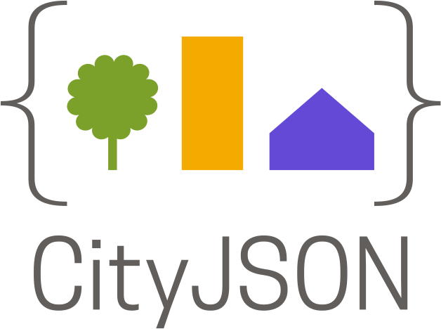

Data Thinking for Urban Environments
We approach the built environment as a complex phenomenon to be read through data — spanning physical processes and the ways we measure and interpret them to inform responsive urban design.
We ask what can be measured, modelled, and learned
to build fairer, healthier, more resilient cities.
We are a collaborative, impact-driven group that approaches the built environment through data. Spanning the full spectrum from data production and analysis to modelling, visualisation, and governance, we develop open spatial tools, generate knowledge, and train the next generation of professionals.

We approach the built environment as a complex phenomenon to be read through data — spanning physical processes and the ways we measure and interpret them to inform responsive urban design.
We mentor with passion, helping professionals build technical excellence in geomatics, spatial design, and urban data — grounded in ethics and data governance.
We build open-source software, data-informed design workflows, and 3D data solutions that make complex phenomena understandable and usable.
We bring diverse perspectives together to address complex challenges, grounded in open science — prioritising transparency, reproducibility, and shared knowledge.
We develop methods and models that are technically robust, transparent, and reproducible, with every application oriented toward the benefit of society.

A compact, developer-friendly encoding for 3D city models. UDS Vision is a creator and maintainer of this open standard, used worldwide for visualisation, analysis, and data exchange.